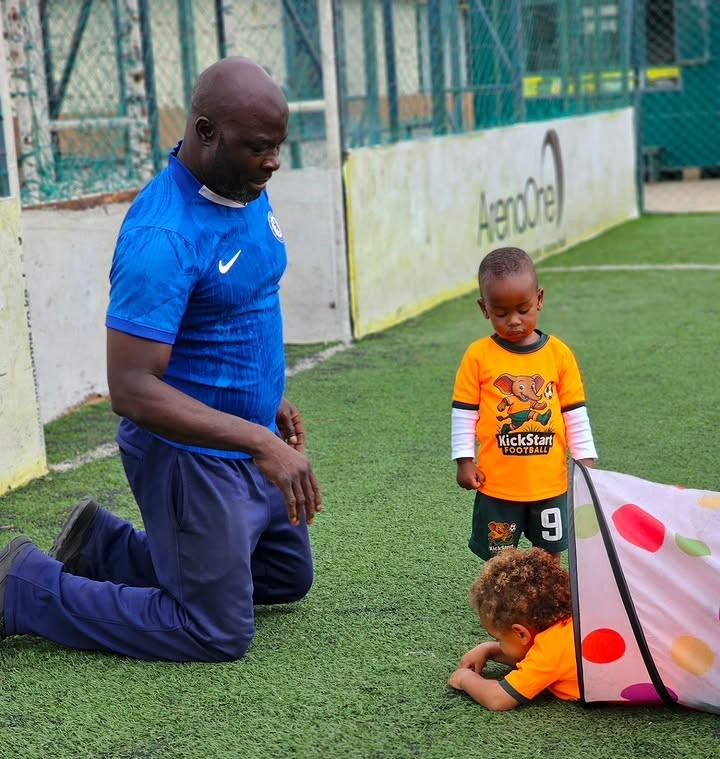
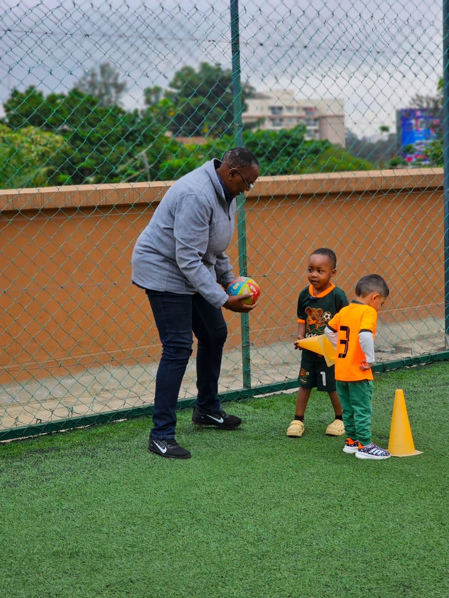
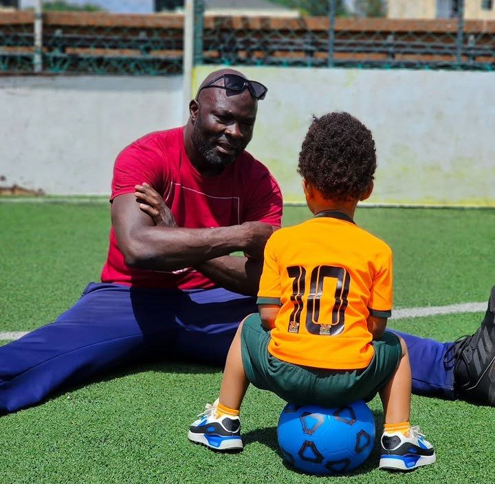

Junior Kickers
Building confidence, coordination and football skills through fun and imaginative play.
Find a Class
Building confidence, coordination and football skills through fun and imaginative play.
Find a ClassJunior Kickers gives young players the chance to become more comfortable with the football and their surroundings.
Sessions introduce more structured games while keeping the focus firmly on fun and enjoyment.
Children begin developing a stronger understanding of the ball while learning simple football movements.
Activities are designed to encourage independence, listening and interaction with other young players.
Sessions combine structured activities with plenty of room for imagination.
Players get moving with simple games and activities.
Children explore basic football movements and ball control.
Fun activities encourage players to use their new skills.
A positive final activity brings the session to a fun close.

Junior players are encouraged to explore football at their own pace while developing important physical and social skills.
A look at some of the fun, active and engaging experiences our Junior Kickers enjoy.

Young players develop their football skills while taking part in fun, energetic activities.
Players build coordination, confidence and control as they explore new football activities.

Children learn to interact, communicate and enjoy football alongside their fellow players.

Positive encouragement helps young players feel confident trying new activities.
Watch some of the activities, games and experiences that make our sessions special.
A glimpse of our Junior Kickers enjoying football-based games and activities.
See how children develop movement, coordination and confidence while playing together.
Discover a football session near you.